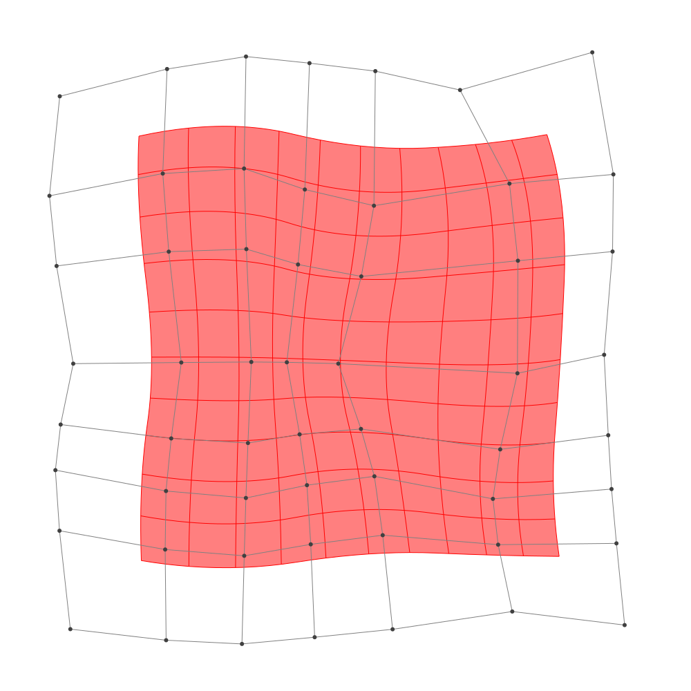
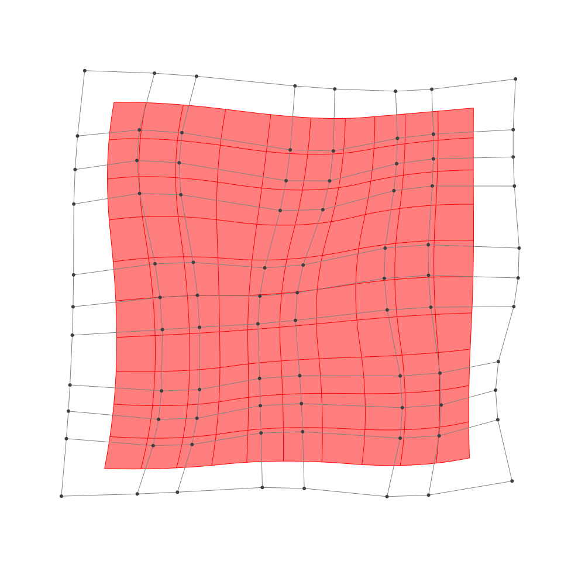

Refinement
BasicBSpline.refinement — FunctionRefinement of B-spline manifold with given B-spline spaces.
julia> p = 2 # degree of polynomial2julia> k = KnotVector(1:8) # knot vectorKnotVector([1, 2, 3, 4, 5, 6, 7, 8])julia> P = BSplineSpace{p}(k) # B-spline spaceBSplineSpace{2, Int64}(KnotVector([1, 2, 3, 4, 5, 6, 7, 8]))julia> rand_a = [SVector(rand(), rand()) for i in 1:dim(P), j in 1:dim(P)]5×5 Matrix{StaticArrays.SVector{2, Float64}}: [0.119041, 0.632392] [0.1173, 0.51853] … [0.694056, 0.933791] [0.431014, 0.93084] [0.403014, 0.435692] [0.00834711, 0.165575] [0.431696, 0.384426] [0.144988, 0.390844] [0.904902, 0.324027] [0.651027, 0.431102] [0.815237, 0.180423] [0.632179, 0.125729] [0.274165, 0.838115] [0.458587, 0.242849] [0.436394, 0.387041]julia> a = [SVector(2*i-6.5, 2*j-6.5) for i in 1:dim(P), j in 1:dim(P)] + rand_a # random5×5 Matrix{StaticArrays.SVector{2, Float64}}: [-4.38096, -3.86761] [-4.3827, -1.98147] … [-3.80594, 4.43379] [-2.06899, -3.56916] [-2.09699, -2.06431] [-2.49165, 3.66557] [-0.0683041, -4.11557] [-0.355012, -2.10916] [0.404902, 3.82403] [2.15103, -4.0689] [2.31524, -2.31958] [2.13218, 3.62573] [3.77416, -3.66188] [3.95859, -2.25715] [3.93639, 3.88704]julia> M = BSplineManifold(a,(P,P)) # Define B-spline manifoldBSplineManifold{2, (2, 2), StaticArrays.SVector{2, Float64}, Tuple{BSplineSpace{2, Int64}, BSplineSpace{2, Int64}}}((BSplineSpace{2, Int64}(KnotVector([1, 2, 3, 4, 5, 6, 7, 8])), BSplineSpace{2, Int64}(KnotVector([1, 2, 3, 4, 5, 6, 7, 8]))), StaticArrays.SVector{2, Float64}[[-4.380958908305321, -3.8676084487326605] [-4.382699747618434, -1.981469818736574] … [-4.203148675240147, 2.2162057815094336] [-3.8059435351516697, 4.433790868916349]; [-2.0689862317187204, -3.569160423224355] [-2.0969857847328206, -2.0643080229537056] … [-1.5710725794906164, 1.6114670656598589] [-2.49165289376922, 3.6655748588077506]; … ; [2.1510271692783567, -4.068897581526791] [2.3152368626503526, -2.319576755152131] … [1.5698357777507814, 2.2286428146470207] [2.132178887748046, 3.6257287319704687]; [3.774164648650337, -3.6618849918048184] [3.9585866275960404, -2.257150796966995] … [4.410528484651404, 2.348574867572204] [3.9363935442035975, 3.8870412038880784]])
h-refinemnet
Insert additional knots to knot vector.
julia> k₊=(KnotVector(3.3,4.2),KnotVector(3.8,3.2,5.3)) # additional knotvectors(KnotVector([3.3, 4.2]), KnotVector([3.2, 3.8, 5.3]))julia> M_h = refinement(M,k₊=k₊) # refinement of B-spline manifoldBSplineManifold{2, (2, 2), StaticArrays.SVector{2, Float64}, Tuple{BSplineSpace{2, Float64}, BSplineSpace{2, Float64}}}((BSplineSpace{2, Float64}(KnotVector([1.0, 2.0, 3.0, 3.3, 4.0, 4.2, 5.0, 6.0, 7.0, 8.0])), BSplineSpace{2, Float64}(KnotVector([1.0, 2.0, 3.0, 3.2, 3.8, 4.0, 5.0, 5.3, 6.0, 7.0, 8.0]))), StaticArrays.SVector{2, Float64}[[-4.380958908305321, -3.8676084487326605] [-4.382003411893189, -2.7359252707350086] … [-4.143567904226876, 2.5488435446204707] [-3.8059435351516697, 4.433790868916349]; [-2.878176668524031, -3.673617232152262] [-2.889462070455284, -2.6906356837475305] … [-2.561202523790471, 2.139824343127992] [-2.9516546182530776, 3.93445046234576]; … ; [2.1510271692783567, -4.068897581526791] [2.249552985301554, -3.019305085701995] … [1.6541872442503711, 2.4382057022455377] [2.132178887748046, 3.6257287319704687]; [3.774164648650337, -3.6618849918048184] [3.884817836017759, -2.819044474902124] … [4.3394082435842325, 2.579344818019585] [3.9363935442035975, 3.8870412038880784]])julia> save_png("2dim_h-refinement.png", M_h) # save image

Note that this shape and the last shape are identical.
p-refinemnet
Increase the polynomial degree of B-spline manifold.
julia> p₊=(1,2) # additional degrees(1, 2)julia> M_p = refinement(M,p₊=p₊) # refinement of B-spline manifoldBSplineManifold{2, (3, 4), StaticArrays.SVector{2, Float64}, Tuple{BSplineSpace{3, Int64}, BSplineSpace{4, Int64}}}((BSplineSpace{3, Int64}(KnotVector([1, 2, 3, 3, 4, 4, 5, 5, 6, 6, 7, 8])), BSplineSpace{4, Int64}(KnotVector([1, 2, 3, 3, 3, 4, 4, 4, 5, 5, 5, 6, 6, 6, 7, 8]))), StaticArrays.SVector{2, Float64}[[-3.997159451773376, -3.3622193798874824] [-4.000218097571679, -2.450923917366558] … [-3.7200757681917347, 2.6630007134587736] [-3.631288652678086, 3.758170149307313]; [-2.4602207863324725, -3.2268017345028515] [-2.4720323366977723, -2.4426016818904053] … [-2.184989280086561, 2.23259535384922] [-2.5354639826952727, 3.273272358278085]; … ; [2.4634446844155913, -3.578089719626833] [2.5472338882327303, -2.7321448590675717] … [2.1406837542983235, 2.6037938202567643] [2.3354821384265327, 3.3141184805011905]; [3.5489050515925307, -3.3641790984016575] [3.6394316839342373, -2.633096448354675] … [3.8617325504912263, 2.707311925372291] [3.7110382511377455, 3.4647633919475265]])julia> save_png("2dim_p-refinement.png", M_p) # save image

Note that this shape and the last shape are identical.